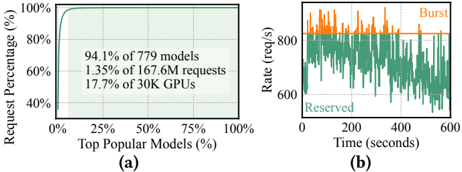
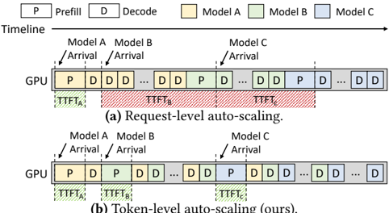
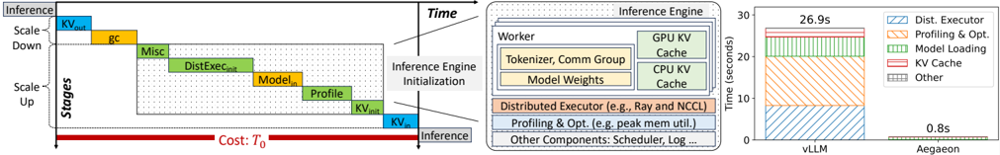
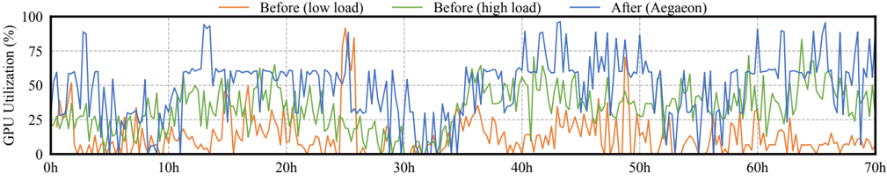
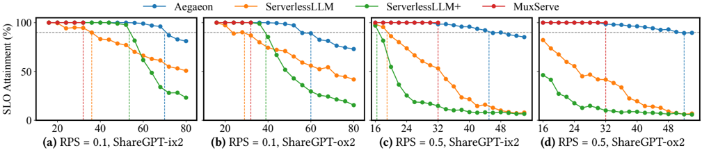
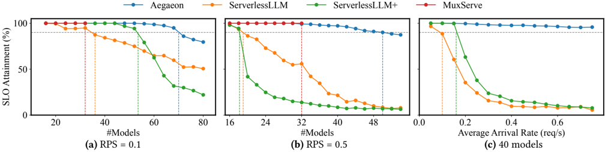

Aegaeon 值得进入受控适配评估，但不能直接当成迁移结论
对技术产品 / 基础设施领导来说，这篇论文的价值不在于又给出一个系统图，而在于它把模型市场的长尾 GPU 浪费、token-level auto-scaling、TTFT/TBT SLO framing 和 Alibaba Cloud beta deployment 放进同一个证据链。当前适合推进的是 architecture evaluation 与小规模复测，不是默认复用论文的生产收益。
Aegaeon 的生产相关性强，迁移可信度仍要靠我们复测
论文足以回答“是否值得评估”：值得；但还不能回答“是否可直接适配上线”：不能。
Aegaeon 的核心判断是，模型市场里的 GPU 浪费不是单个热门模型 serving 不够快，而是长尾模型常驻、热门模型突发、request-level scale decision 太粗三件事叠在一起。token-level auto-scaling 的提出，正是为了在 active request 尚未完成时就允许模型被 preemptively scale down，再让 pending model 进入服务，从而减少 request-level HOL blocking。
对我们的 deck 来说，最重要的边界是：Alibaba Cloud beta deployment 是强生产信号，但它仍属于对方 model marketplace、engine composition、memory management 和 SLO policy 的结果。迁移到我们的 serving stack 时，必须重新证明 TTFT/TBT 口径、KV cache movement、model loading path、scheduler preemption 和 workload mix 都足够接近。
GPU 浪费来自长尾与突发并存，不只是单模型吞吐不够
Aegaeon 的问题设定很贴近模型市场：绝大多数模型低频调用，但热门模型又会短时突破 reserved capacity。

这也是 deck 应少用泛泛系统图的原因：这里真正说服人的不是“多模型 serving 很复杂”，而是生产 workload 统计已经把浪费位置指到了 long-tail residency 与 burst provisioning。
现有路线各自优化 memory、placement 或 phase isolation，Aegaeon 的差异在 token-level scale decision
Aegaeon 不是替代所有 serving 优化，而是把 scale-down / scale-up 的决策粒度从 request 推到 token。
vLLM / PagedAttention
- 一句话定位
- 减少 KV cache 碎片和重复，让 serving engine 在同等 latency 下提升吞吐。
- 代表证据
- SOSP 2023 paper reports 2-4x throughput improvement versus FasterTransformer/Orca。3
- 适用边界
- 它主要优化 memory allocation，不决定 active model 何时被 preempt。
- 与 Aegaeon 关系
- 底层 engine 能力上互补；Aegaeon 处理多模型 scale decision 和切换成本。
MuxServe
- 一句话定位
- 按 model popularity 做 colocate 和 adaptive batching，提高多模型 LLM serving 利用率。
- 代表证据
- ICML 2024 paper reports up to 1.8x higher throughput or 2.9x more requests within 99% SLO attainment。4
- 适用边界
- Aegaeon 论文认为 multiplexing 受 GPU memory capacity 限制，通常停在 2-3 models/GPU。
- 与 Aegaeon 关系
- 同属多模型 serving；Aegaeon 攻击 request-level active-model bottleneck。
DistServe
- 一句话定位
- 将 prefill 和 decoding 放到不同 GPU，围绕 TTFT 与 TPOT/SLO 分别做资源规划。
- 代表证据
- arXiv / OSDI 2024 abstract reports 7.4x more requests or 12.6x tighter SLO。5
- 适用边界
- 重点是 phase interference，不直接解决模型市场里的 active-model scale-down。
- 与 Aegaeon 关系
- Aegaeon 借用分离视角，但目标变成多模型 token-level pooling。
Serverless cold-start acceleration
- 一句话定位
- 降低模型从远端或二级存储到可服务状态的启动时间。
- 代表证据
- HydraServe reports 1.7x-4.7x lower cold-start latency and 1.43x-1.74x better SLO attainment。6
- 适用边界
- scale-up 快不等于可以在 token boundary 上安全抢占 active models。
- 与 Aegaeon 关系
- 补充切换成本优化；Aegaeon 还要处理 KV cache swap / sync 与 token-level SLO。
| 路线 | 主优化轴 | 是否直接处理多模型 active bottleneck | 迁移到我们 stack 的关键问题 |
|---|---|---|---|
| vLLM / PagedAttention | KV memory fragmentation / sharing | 否 | 是否已是底层 engine；若是，Aegaeon 需要在其 memory manager 上接管切换路径。 |
| MuxServe | model colocation + batching | 部分 | 我们的模型尺寸、TP、hot/cold 分布是否让 colocation 已经足够。 |
| DistServe | prefill/decoding phase isolation | 否 | 我们的 prefill/decoding 是否已拆分，以及跨 GPU 通信是否能承受。 |
| Aegaeon | token-level autoscaling + preemptive switch | 是 | 我们的 SLO、KV cache movement、model loading path 是否能支撑 token boundary 切换。 |
token-level pooling 要同时解决 SLO 调度和切换成本
Aegaeon 的关键不是简单多塞模型，而是在 TTFT/TBT 约束下拆开 prefill 与 decoding，并把 preemptive auto-scaling 成本压低。


实验和 beta deployment 给出强信号，但迁移证据仍缺席
ShareGPT 实验和 Alibaba Cloud beta deployment 支持继续评估；自家 scheduler、backend、model mix 与 SLO 口径仍需复测。



下一步应验证迁移前提，而不是复述论文指标
如果进入评估，首轮 gate 应覆盖 workload 相似度、TTFT/TBT 定义、切换开销、KV cache 同步和 beta 数据可比性。
| 验证门槛 | 论文当前信号 | 我们需要补的证据 | 建议状态 |
|---|---|---|---|
| workload 相似度 | 779 models、167.6M requests、30K GPUs 的长尾统计。1 | 我们的模型数、请求 skew、burst pattern、平均 request duration。 | 先验对齐 |
| SLO 口径 | 以 TTFT 与 TBT/token deadline 定义 SLO attainment。 | 我们的 TTFT/TBT/TPOT 口径、违约惩罚、产品优先级。 | 必须复测 |
| 切换成本 | 论文称 autoscaling overhead 通过三类优化降低 97%。2 | 我们的 engine reinitialization、model weight cache、KV cache swap/sync benchmark。 | 高风险 |
| 生产收益 | beta deployment 报告 1192 -> 213 GPUs，服务 1.8B 到 72B 的 tens of models。 | 同口径的 before/after utilization、SLO violation、fallback policy。 | 可作为目标，不可当承诺 |
建议后续 PPT 的顶层答案围绕“可立项复测，不可直接上线”展开：第一页先给判断，再用三组证据支撑，最后把迁移假设作为工程 gate，而不是藏在备注里。
Aegaeon 证据和补充对照来源
- [F1] Aegaeon paper Figure 1, Concurrent LLM serving workloads, local asset `review/assets/figure_workload.png`. ↩
- [S1] Aegaeon: Effective GPU Pooling for Concurrent LLM Serving on the Market, primary XML, abstract / introduction / evaluation / conclusion. ↩
- [R3] Efficient Memory Management for Large Language Model Serving with PagedAttention, arXiv:2309.06180 / SOSP 2023, https://arxiv.org/abs/2309.06180. ↩
- [R1] MuxServe: Flexible Spatial-Temporal Multiplexing for Multiple LLM Serving, PMLR ICML 2024, https://proceedings.mlr.press/v235/duan24a.html. ↩
- [R2] DistServe: Disaggregating Prefill and Decoding for Goodput-optimized Large Language Model Serving, arXiv:2401.09670 / OSDI 2024, https://arxiv.org/abs/2401.09670. ↩
- [R4] HydraServe: Minimizing Cold Start Latency for Serverless LLM Serving in Public Clouds, arXiv:2502.15524, https://arxiv.org/abs/2502.15524. ↩
- [F2] Aegaeon paper Figure 2, Request-level auto-scaling vs token-level auto-scaling, local asset `review/assets/figure_token_vs_request.png`. ↩
- [F7] Aegaeon paper Figure 7, default preemptive auto-scaling and optimized initialization breakdown, local asset `review/assets/figure_scaling_overhead.png`. ↩
- [F18] Aegaeon paper Figure 18, GPU utilization before and after deploying Aegaeon, local asset `review/assets/figure_gpu_utilization.png`. ↩
- [F11] Aegaeon paper Figure 11, End-to-end SLO attainment under varying RPS with ShareGPT, local asset `review/assets/figure_slo_sharegpt.png`. ↩
- [F13] Aegaeon paper Figure 13, SLO attainment under varying model count and average arrival rate, local asset `review/assets/figure_capacity_models.png`. ↩